PRIVACY POLICY UPDATE
Welcome to the North American Teletext Archive
Archiving North American teletext samples one submission at a time.
Latest Updates


Watch this space for quick updates.
Last Updated: 10/25/2026
On this website is a collection of newly decoded pages from North American teletext from various services such as the CBS's ExtraVision, NBC's NBC Teletext, and Keyfax and Electra, which were broadcast on TBS (then SuperStation WTBS and SuperStation TBS). We're also now including samples from various text-based (non-teletext) services, both national (such as ABC PLUS) and local (such as Kentucky Educational Television's AgText).
Until now, there had not been any clear, high-quality examples of these services, specifically the teletext services. This site aims to change that by acting as a repository, providing access to individual archives from these services, archives provided by those who have the capacity to decode these services.
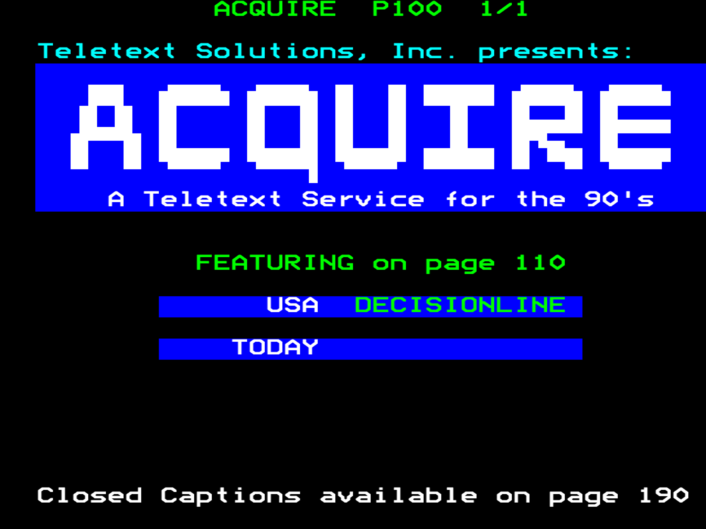
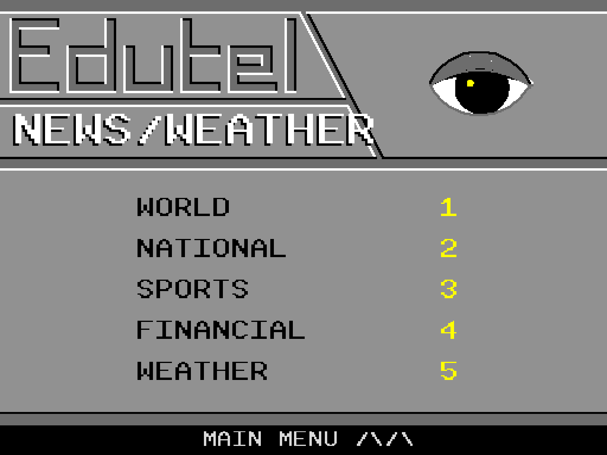
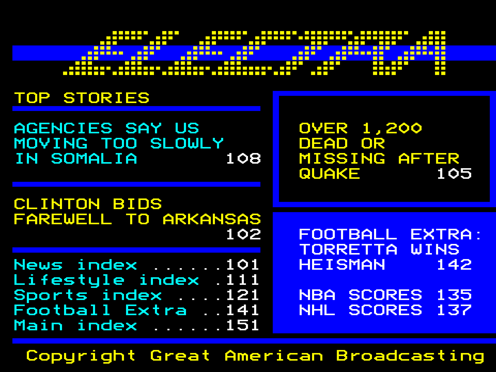
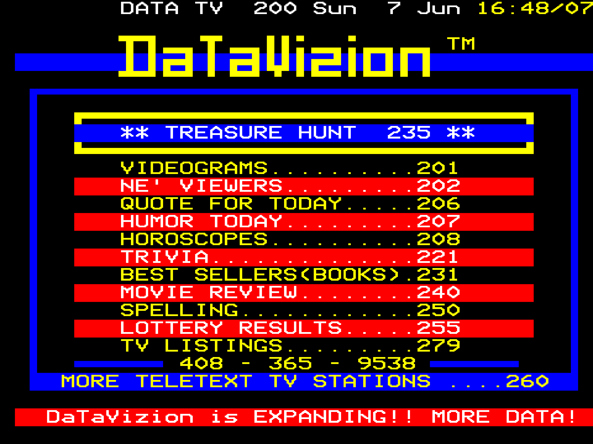
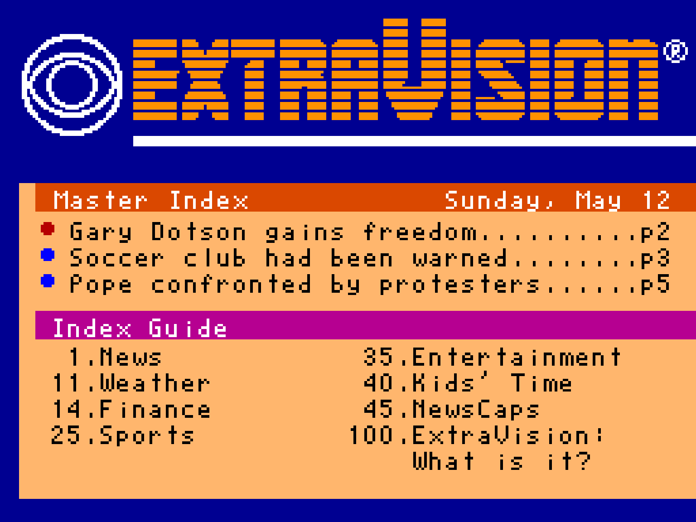
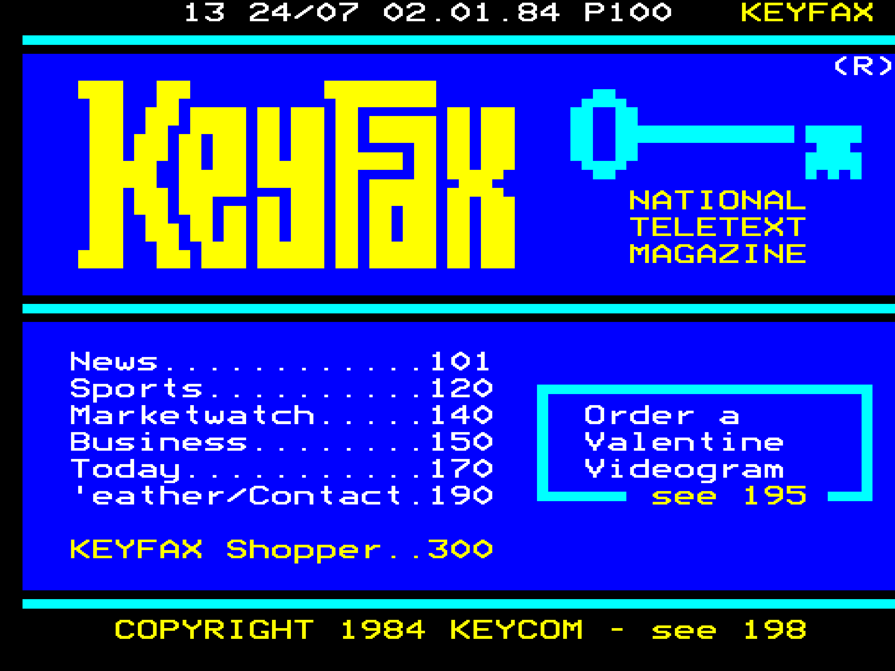
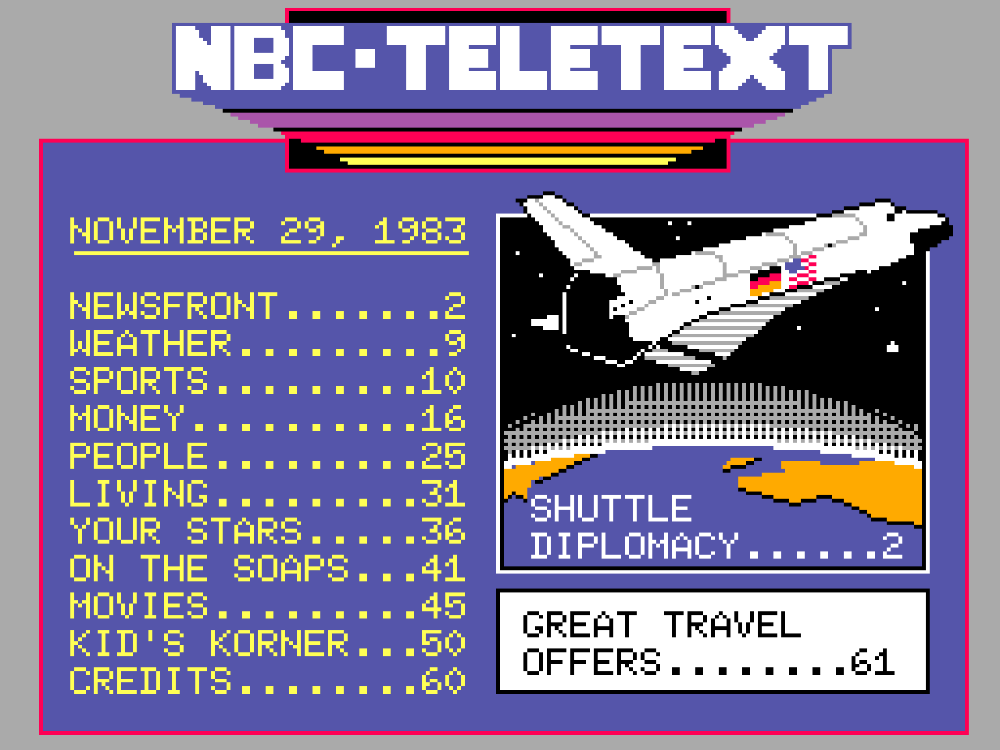
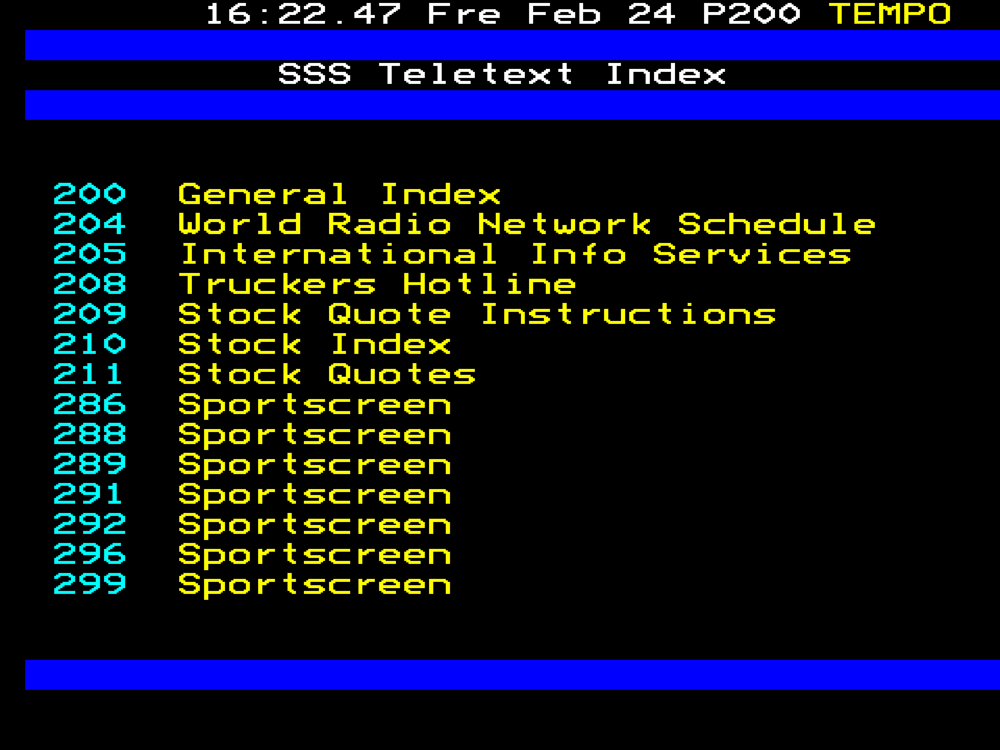
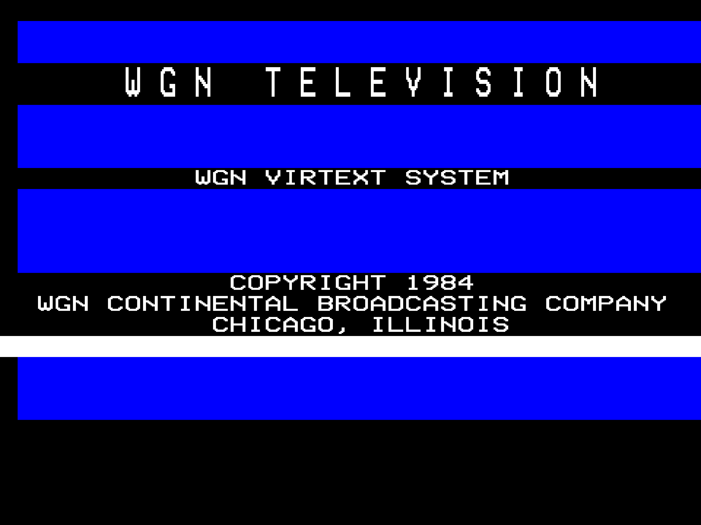
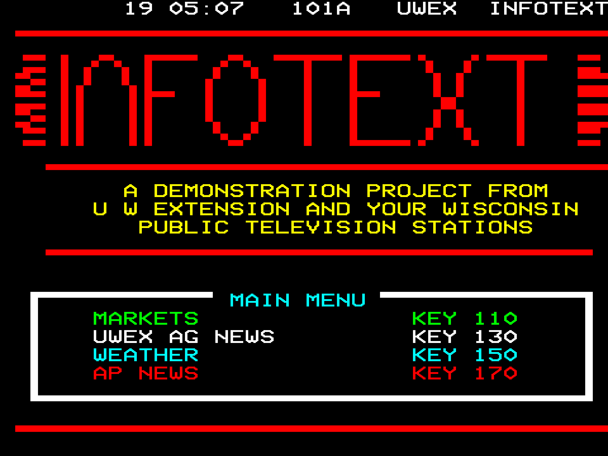
New Viewable Samples
Click on the sample date to view images from each sample (teletext only). Scroll table to view more results.
25 Newest Additions
Click on the sample date to view each sample (teletext only). Scroll table to view more results.
Samples Wanted!
EARLY WGBH SAMPLES WANTED
If you've got any content from WGBH (Boston, MA) dating from the early 1980s to approximately 1985, you've likely got something we've been trying hard to find.
At that time, WGBH had a teletext service called "Scoop". Here's an image of the index page dated January 19, 1983. To view more images, check out this page. This is a service that's high on our wish list and one that we'd love to preserve.
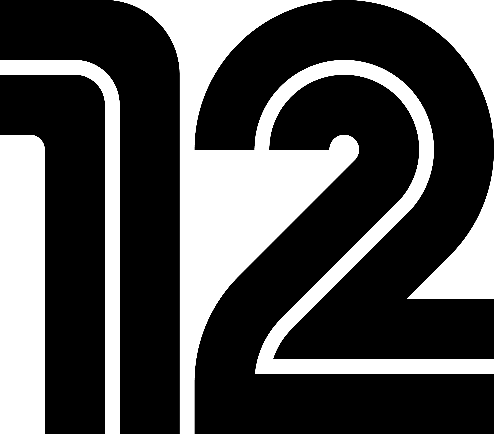
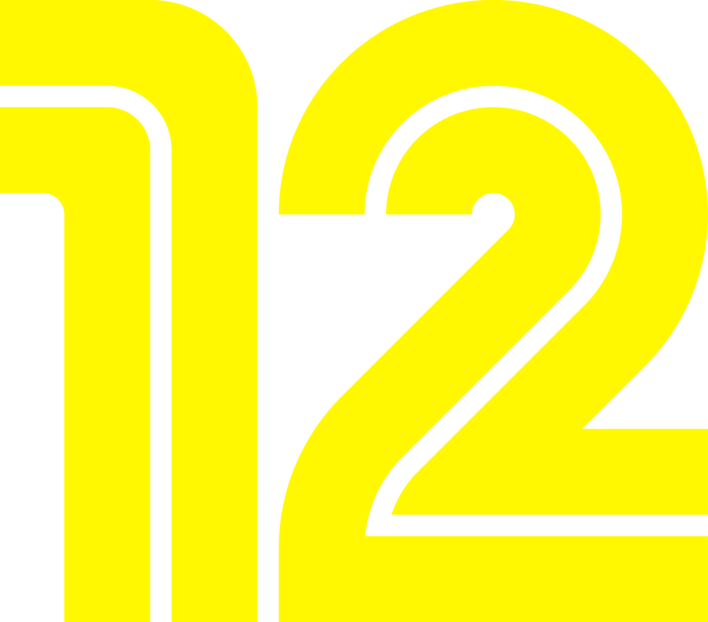
WKRC SAMPLES WANTED
We're looking for samples from WKRC (Cincinnati, OH) that date from approximately mid-1982 to approximately early 1985. Electra, the service broadcast by TBS beginning in 1985, got its start on WKRC in mid-1982 before going national in 1985.
If you've got content from WKRC from this time period, you've likely got some localized Electra. We'd love to add some local Electra sample to the site at some point.
We are currently looking for more teletext samples to add to the site! We are looking for samples from the following CBS O&O (owned & operated) stations and three CBS affiliates. We're specifically looking for samples from the following affiliates that operated their own localized versions of ExtraVision:
| KCBS | KSL | WBTV | WIVB |
| Los Angeles, CA | Salt Lake City, UT | Charlotte, NC | N/A |
Additional O&O affiliates include:
- KMOX (St. Louis, MO) (former O&O)
- WBBM (Chicago, IL)
- WCAU (Philadelphia, PA)
- WCBS (New York, NY)
NOTE: KMOX samples span 1983 – 1986.
If you have any videotapes (Betamax or VHS) from these stations that date between 1983 and early 1992, you've got ExtraVision on your hands. To find out how to transfer the teletext from these tapes, visit the Archiving Teletext page. Also check out our list of affiliates that, unfortunately, messed with their VBI, including the teletext stream.